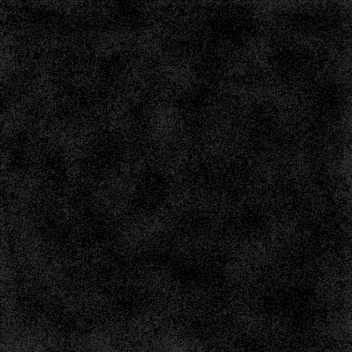

About This Application

This Todo List application is designed to help you manage your tasks efficiently. You can add, complete, and delete tasks as needed. The application keeps track of your total and completed tasks, making it easier for you to stay organized.
Features include:
- Add new tasks with a title, description, and due date.
- Mark tasks as completed.
- Delete tasks that are no longer needed.
- View statistics on total and completed tasks.
We hope this application helps you stay productive and organized!